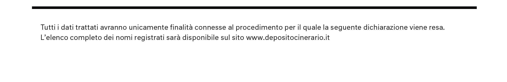

L’ufficiale di deposito,
ai sensi degli atti di disposizione del corpo,
visti i dati registrati presso l’ufficio di Deposito Cinerario Italiano di Milano,
certifica che l’operatore di deposito ha correttamente depositato:
Nome:
Nascita:
Morte:
Professione:
Religione:
Enrica Bazzi
1900
2020
Insegnante
Ebraismo
La registrazione è avvenuta alle ore 16:24 del 12.03.2020 presso l’ufficio di Deposito
Cinerario Italiano di Milano.
Milano, 12/03/2020